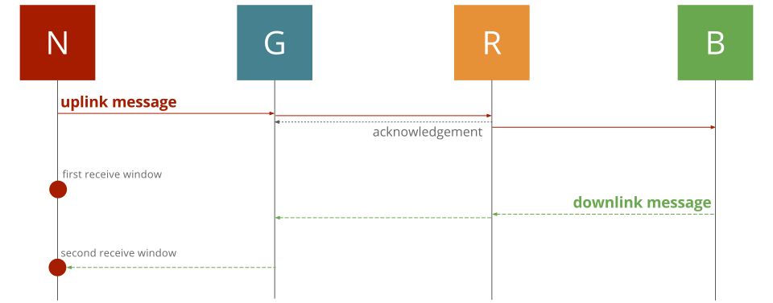

Router
Role
The router's role is straightforward; It has to transfer packet coming from an emitter to the right recipient. The emitter and the recipient could be either:
- A gateway and a broker
- A broker and a gateway
This implies the router is able to interact with gateways and brokers in a bi-directional way. Let's distinguish communications the following way:
- Uplink communication (from a gateway to one or several brokers)
- Downlink communication (from a broker to a gateway)
Communications protocols used between, on the one hand, gateways and the router (uplink) and, on the other hand, the router and brokers (downlink) don't have to be identical.
Both communication process have their own characteristics and behavior, they will be detailed separately.
Uplink communication
A given gateway will be connected to a router of its choice, meaning that the gateway is configured to interact with that precise router. A router nevertheless might received communication from several gateways. Thus, gateways are completely unknown from a router - and would remain unknown during the router lifecycle.
A router is thereby a machine one which gateway will attempt to connect. This assumes that the router is accessible via a static IP address or solvable through a DNS service. The whole protocol used by gateways can be found here and could be sum up the following ways:
- Gateways initiate communication with a router
- Gateways send data using a json structure and containing one or several packets
- The router acknowledge reception of data
- Gateways could be protected by a firewall or could used a NAT, routers cannot initiate communications
- Gateways might trigger and pull the router periodically to keep a connexion open
Downlink communication
As for the first version, the network will only supports devices of class A, the connexion between a gateway and a router would stay opened for a maximum of 2 seconds. The whole process is detailed in the LoRaWAN specifications 1.0 - section 3.3 Receive Windows. In few words though, after having emitted messages, a class A node will open two short receive windows and allow incoming messages from a gateway. Windows are opened exactly one and two seconds after the packet's emission. Sending packet at the right time is part of the gateway responsibility, however, scheduling the emission is part of the network's one.
If any command or data have to be sent to the node, it has to be done precisely during one of this two windows. More details about commands are given in the section related to the Network Server. Incidentally, only one of the two windows is available, meaning that sending through the first window will cause the second one to never be opened.

Receive Windows
Having said that, a downlink communication could be initiated by either an Application or a Network Server in response of an uplink message from a device. The role of a router is to forward those messages, not to trigger or schedule them.